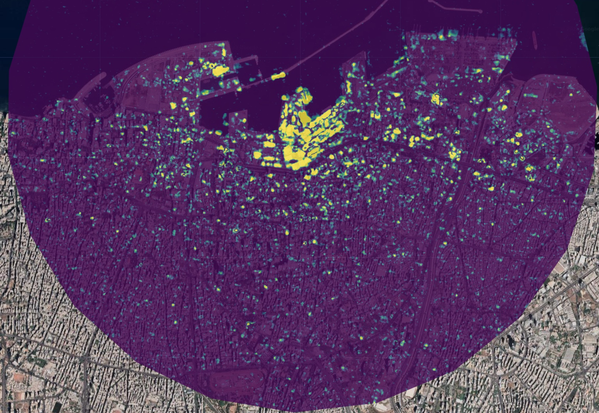

Project Summary
This project develops an interactive Google Earth Engine application to explore the nexus between glacier retreat, climate warming, and mining activity in Greenland’s peripheral glacier zone. The platform combines remote sensing change detection, climate trend analysis, proximity-based anthropogenic indicators, and a Random Forest susceptibility model to identify areas where present-day glaciers may be more susceptible to future retreat.
The workflow consists of two components. First, a preprocessing pipeline computes Landsat-derived glacier extent change (ca. 2000–2024), summer land surface temperature trends, terrain variables, and anthropogenic proximity indicators, then trains a Random Forest model to predict glacier retreat susceptibility using cleaned historical retreat and stable-ice labels with spatial block validation. These computationally expensive outputs are exported as a multi-band Earth Engine asset. Second, an interactive application loads the precomputed asset into a dual-map interface that allows users to compare glacier conditions between ~2000 and ~2024, explore susceptibility predictions, inspect model diagnostics, and query local glacier-climate statistics through map clicks.
By integrating environmental change and mining-related pressures into a single exploratory platform, the project supports policy discussions around Arctic climate adaptation, resource development, and environmental governance.
(Fill in the sections below to provide a brief summary of your project. Each section should have no more than 100 words. Do not edit any of the headings.)
Problem Statement
Greenland’s glaciers are undergoing rapid retreat under Arctic amplification, while growing interest in mineral extraction introduces new pressures in fragile cryospheric environments. Although glacier change is widely studied, interactions between climate drivers, topographic controls, and mining-related accessibility remain less accessible in decision-support tools.
Existing scientific outputs are often difficult for non-specialist stakeholders to explore spatially or compare interactively. This project addresses that gap by providing a visual analytical platform that combines:
historical glacier retreat detection warming trend analysis terrain controls proximity to mining, settlements, and coastlines predictive glacier retreat susceptibility modelling
Rather than modelling causal mining impacts directly, the platform identifies areas where these environmental and anthropogenic factors coincide, supporting exploratory analysis of potential glacier vulnerability hotspots.
What is the problem you’re trying to address using this application?
End User
The application is designed for hybrid users across research and policy contexts, including:
Arctic environmental policymakers Greenland planning and resource governance agencies Climate and cryosphere researchers Mining/environmental impact analysts NGOs concerned with Arctic sustainability
Users require a tool that is scientifically robust while remaining intuitive for exploratory spatial analysis. The split-panel interface, interactive click statistics, and model diagnostics are intended to support both scientific interpretation and policy communication.
Who are you building this application for? How does it address a need this community has?
Data
The study integrates multi-source datasets processed within the GEE environment.
| Category | Dataset | Description | Source/Link |
|---|---|---|---|
| GEE Public | Landsat 7/8/9 C2 | NDSI for glacier mapping and Surface Temperature (LST) trends (2000–2024). | USGS / GEE |
| ArcticDEM v4 | 2m resolution mosaic used for high-precision elevation and slope derivation. | PGC / UMN | |
| LSIB Simple | Official Greenland boundary and coastline geometry. | US Dept. of State | |
| Graticules 15° | Polar spatial reference grid for visualization. | Natural Earth | |
| Project Assets | Mining Drillholes | Spatial points of mineral exploration sites (Post-2000). | Taarup-Esbensen (2020) |
| Mineral Licences | Active industrial mining licence polygons (2026 data). | Greenland Portal | |
| Settlements | Locations of 65 settlements and 18 cities across Greenland. | GEE User Asset |
Methodology
Glacier Change Detection and Preprocessing
To address the problem of understanding glacier retreat susceptibility across Greenland, this project first builds a preprocessing workflow in Google Earth Engine that computes all major raster layers before exporting them as a reusable multi-band asset.
Glacier extent is mapped using Landsat 7, 8 and 9 summer imagery (June–August) through the Normalized Difference Snow Index (NDSI). Two glacier inventories are produced:
- Historical glacier extent (~1999–2002)
- Recent glacier extent (~2022–2024)
Retreat is defined as ice present in the historical composite but absent in the recent composite.
To reduce classification noise caused by seasonal snow, cloud contamination and Landsat striping, retreat and stable-ice labels are filtered using connected-pixel patch cleaning.
Terrain variables are then derived from ArcticDEM, while distance surfaces are calculated for:
- Mining drillholes and mineral licences
- Settlements and cities
- Coastline proximity
All layers are standardized to a 300m Greenland-wide polar grid (EPSG:3413) for efficient modelling.
Climate Trend and Predictor Modelling
To capture environmental drivers of retreat susceptibility, Landsat surface temperature is used to derive:
- Early summer temperature baseline (~2000–2002)
- Recent summer temperature (~2022–2024)
- Pixel-level warming trend (2001–2024)
A per-pixel linear fit generates warming rates (\(^\circ C/yr\)).
These climate variables are combined with topographic and anthropogenic predictors into a Random Forest predictor stack:
- Elevation
- Slope
- Warming rate
- Mean summer temperature
- Mine proximity
- Settlement proximity
- Coast proximity
This allows the model to represent interactions between climate, terrain and human development pressures.
Random Forest Retreat Susceptibility Model
A Random Forest model is used to predict susceptibility of present-day glaciers to future retreat.
Training labels are generated from:
- Cleaned historical retreat pixels
- Stable glacier persistence pixels
Only clear retreat and stable classes are sampled, excluding ambiguous pixels.
Rather than random train-test splitting, the model uses spatial block validation to reduce leakage from spatial autocorrelation:
- 10 spatial folds generated across Greenland
- Folds 0–6 used for training
- Folds 7–9 used for testing
Two Random Forest models are implemented:
- Classification model for validation
- Regression-mode Random Forest for continuous susceptibility prediction
Model evaluation includes:
- Accuracy
- Kappa
- Precision
- Recall
- F1 Score
- Variable importance
The final output is a glacier retreat susceptibility surface (0–1), masked to current glaciers.
Precomputed Asset Architecture
Because Landsat composites, distance rasters and machine learning are computationally expensive at Greenland scale, all outputs are exported once as a multi-band Earth Engine image asset.
The asset stores:
- Glacier extent 2000
- Glacier extent 2024
- Retreat mask
- Warming rates
- Early and recent temperature surfaces
- Susceptibility predictions
- Elevation
- Embedded model performance metadata
This allows the interactive application to load analytical outputs directly without recomputing them at startup, improving scalability and responsiveness.
Interactive Regional Statistics
The application also supports click-based regional analysis.
For each selected location, the system calculates statistics within a 25 km buffer:
- Glacier area change
- Temperature change
- Warming trend
- Mean elevation
- Local retreat susceptibility
This turns the model from a static prediction surface into an exploratory decision-support tool.
Interface
The interface is designed as an interactive exploratory platform for policymakers and researchers investigating glacier vulnerability.
The Application
Replace the link below with the link to your application.
How it Works
Use this section to explain how your application works using code blocks and text explanations (no more than 500 words excluding code):
Map.setCenter(35.51898, 33.90153, 15);
Map.setOptions("satellite");
var aoi = ee.Geometry.Point(35.51898, 33.90153).buffer(3000);You can include images:

and math: \[ \Large t = {\frac{\overline{x_1}-\overline{x_2}} {\sqrt{\frac{s^2_1}{n_1} + \frac{s^2_2}{n_2}}}} \]